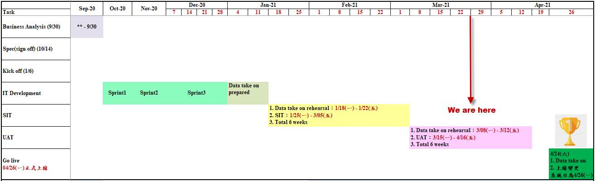

主旨: [Bond futures] 專案進度雙週報_2021/03/26
Solar bond futures專案進行至UAT測試階段，未來主要工作重點為：
1. 持續進行UAT測試至4/16(五)。
2. 召開上線說明會。
其他相關專案時程與工作項目如下述報告：
Solar bond futures專案進度報告 – 2021/03/26
【專案燈號】：on
schedule 
【上線日期】：2021/04/26(一)
【專案時程及階段】：

【專案進度說明】：
|
1. 工作項目 |
||||
|
部室 |
科組 |
燈號 |
窗口 |
To Do |
|
SGB |
Capital Markets |
綠燈 |
謝錦興 |
1.FO/MO Solar bond futures training |
|
市場風險管理部 |
國際科 |
綠燈 |
朱婉寧 |
1.FO/MO Solar bond futures training |
|
數據分析科 |
綠燈 |
王若筑 |
1.FO/MO Solar bond futures training |
|
|
市場計量部 |
模型管理科 |
綠燈 |
鄭文杰 |
1.FO/MO Solar bond futures training |
|
金交清算作業部 |
衍商科 |
綠燈 |
連兆強 |
1.BO/AC Solar bond futures training |
|
金交作業規劃管理部 |
金交會計 |
綠燈 |
游佩芳 |
1.BO/AC Solar bond futures training |
|
法風衡量部- RAy |
Basel規劃科 |
綠燈 |
薛宜婷 |
測試進行中。 |
|
國際會計管理部- SAP |
國際會計一科 |
綠燈 |
陳韋如 |
測試進行中。 |
|
財稅規劃部- BIS |
財會規劃科 |
綠燈 |
詹芬蘭 |
測試進行中。 |
|
金交資訊部-Solar |
規劃管理科 |
綠燈 |
張詣歆 |
1. Data take on 4.上線說明會 |
|
開發一科 |
綠燈 |
陳彥文 |
1. Data take on |
|
|
開發二科 |
綠燈 |
陳正偉 |
1. Data take on |
|
|
開發四科 |
綠燈 |
郭瑞源 |
1. Data take on |
|
|
開發三科 |
綠燈 |
粘孝欽 |
1. SIT 測試 |